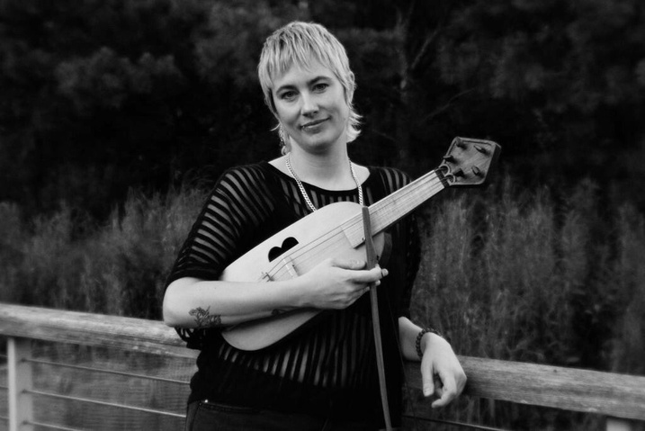
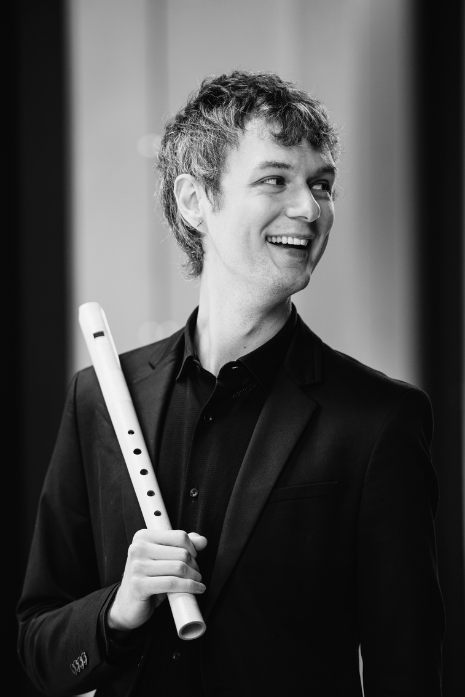
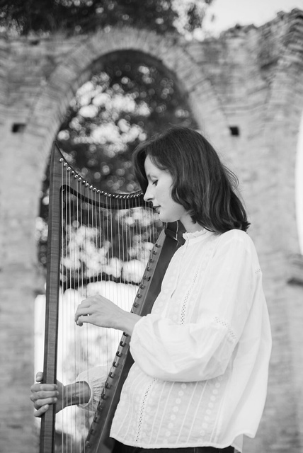
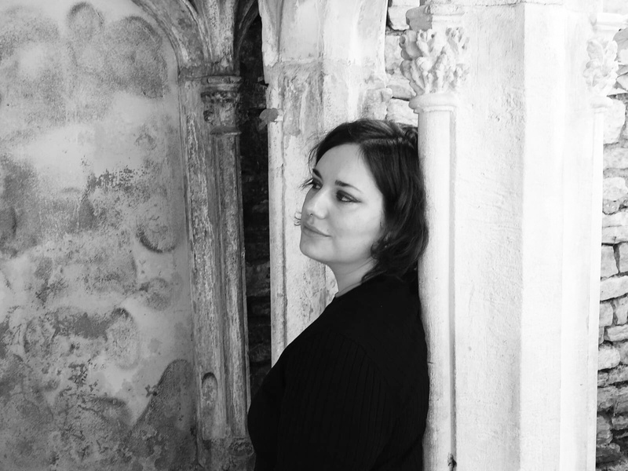
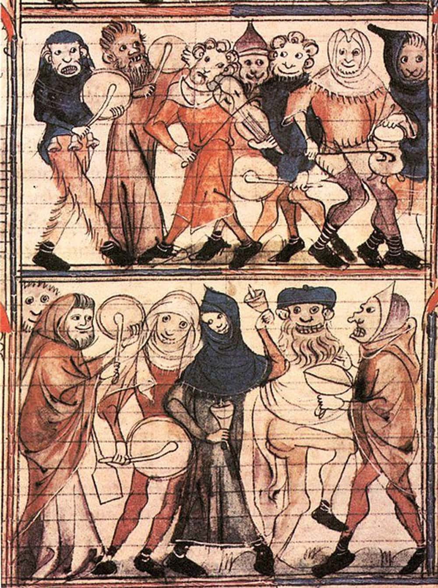

Songs and dances of the late Middle Ages, performed on voice, gittern, recorder and Gothic harp — music made for candlelight and stone.
To marry rigorous historical awareness with creative, narrative-driven programming — crafting concerts that interlace music, history, and storytelling.
Formed at the Schola Cantorum Basiliensis, Ensemble Basilisk unites musicians drawn to the expressive potential of medieval music and its contemporary resonance. Their work combines historically informed performance with a spirit of experimentation, exploring the unique colours and textures of instruments such as the bray harp, clavicymbalum, organetto, recorder, bowed vielle and voice.
Each project invites the listener into a world where sound becomes both research and invention, where precision meets imagination, and the past is re-heard through a living, poetic lens.
The ensemble’s namesake, the mythical Basilisk, captures this duality: sinuous, vibrant, and unpredictable — a symbol of transformation and intensity. Rooted in the spirit of the Mundus Inversus, where the sacred encounters the grotesque and beauty emerges from contrast, Basilisk reimagines early music as a space of curiosity, vitality, and presence.

A vielle and Baroque violin player performing across the US and Europe — from Boston Early Music Festival to Lucerne, and on Broadway in ‘Farinelli and the King’. A graduate of Juilliard and the Royal Academy of Music, now studying with Baptiste Romain at the Schola Cantorum Basiliensis.

A recorder and early-keyboard player specialising in medieval, renaissance and contemporary music. First Prize winner at the Royal Overseas League Competition and founding artistic lead of the UK medieval ensemble Rune, currently reading a masters in early keyboards at the Schola Cantorum Basiliensis.

Studied modern and historical harps at the Rossini Conservatory of Pesaro and the Royal Conservatoire of The Hague before a Specialized Master in Historical Harps at the Schola Cantorum Basiliensis. A sought-after continuo player at festivals from the Dutch Harp Festival to Musica Antica Den Haag.
A mezzo-soprano trained in Bordeaux, with master’s degrees from the Sorbonne and a Master in Medieval and Renaissance vocal performance from the Schola Cantorum Basiliensis. Based in Basel, she founded the professional vocal ensemble KIMA.


The Garden of Earthly Delight · National Centre for Early Music, York
Under the Greenwood · London
The Hawthorn Consort is available for concert series, festivals, liturgical music, private events and weddings, with programmes tailored to your space and occasion. We perform as a quartet or in smaller forces.
hello@hawthornconsort.com